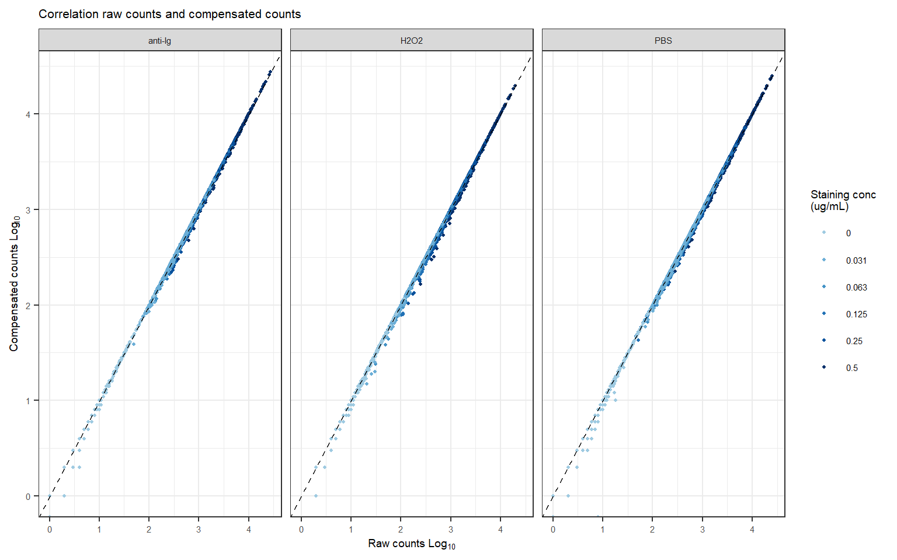

Last updated: 2025-02-10
Checks: 7 0
Knit directory: chapter_IDseq_tech/
This reproducible R Markdown analysis was created with workflowr (version 1.7.1). The Checks tab describes the reproducibility checks that were applied when the results were created. The Past versions tab lists the development history.
Great! Since the R Markdown file has been committed to the Git repository, you know the exact version of the code that produced these results.
Great job! The global environment was empty. Objects defined in the global environment can affect the analysis in your R Markdown file in unknown ways. For reproduciblity it’s best to always run the code in an empty environment.
The command set.seed(20240806) was run prior to running
the code in the R Markdown file. Setting a seed ensures that any results
that rely on randomness, e.g. subsampling or permutations, are
reproducible.
Great job! Recording the operating system, R version, and package versions is critical for reproducibility.
Nice! There were no cached chunks for this analysis, so you can be confident that you successfully produced the results during this run.
Great job! Using relative paths to the files within your workflowr project makes it easier to run your code on other machines.
Great! You are using Git for version control. Tracking code development and connecting the code version to the results is critical for reproducibility.
The results in this page were generated with repository version 31f8444. See the Past versions tab to see a history of the changes made to the R Markdown and HTML files.
Note that you need to be careful to ensure that all relevant files for
the analysis have been committed to Git prior to generating the results
(you can use wflow_publish or
wflow_git_commit). workflowr only checks the R Markdown
file, but you know if there are other scripts or data files that it
depends on. Below is the status of the Git repository when the results
were generated:
Ignored files:
Ignored: .Rhistory
Ignored: .Rproj.user/
Ignored: analysis/figure/
Untracked files:
Untracked: code/DS075_combined_analysis.R
Untracked: code/packages_FACS.R
Untracked: code/packages_seq.R
Untracked: data/BB014_LibraryIndex/
Untracked: data/DS027_FirstIDseq/
Untracked: data/DS055_LibraryKlenowAmp/
Untracked: data/DS056_LibraryAmp1/
Untracked: data/DS059_LibraryByproducts/
Untracked: data/DS072_LibraryAmp2/
Untracked: data/DS075_BarcodeCheck/
Untracked: data/DS078_Blocking1/
Untracked: data/DS080_Blocking2/
Untracked: data/DS084_BioInhibition/
Untracked: data/DS091_ImmunostainingBio/
Untracked: data/DSxxx_Conjugations/
Untracked: data/annotated_gels_batch1-10_digital.pptx
Untracked: output/BioAnalyzer_plots/
Untracked: output/DS075_BarcodeCheck/
Untracked: output/DS078_Blocking1/
Untracked: output/DS091_ImmunostainingBio/
Untracked: output/figures/
Untracked: output/network_visual/
Unstaged changes:
Deleted: analysis/about.Rmd
Deleted: analysis/c_flow_vis.Rmd
Note that any generated files, e.g. HTML, png, CSS, etc., are not included in this status report because it is ok for generated content to have uncommitted changes.
These are the previous versions of the repository in which changes were
made to the R Markdown (analysis/e_IDseq_ann.Rmd) and HTML
(docs/e_IDseq_ann.html) files. If you’ve configured a
remote Git repository (see ?wflow_git_remote), click on the
hyperlinks in the table below to view the files as they were in that
past version.
| File | Version | Author | Date | Message |
|---|---|---|---|---|
| Rmd | 31f8444 | mwitmond | 2025-02-10 | Revised ch3 figs |
row_order = c("A", "B", "C", "D", "E", "F", "G", "H")
col_order = c("1", "2", "3", "4", "5", "6", "7", "8", "9", "10", "11", "12")
panel_labels <- c("a", "b", "c","d", "e", "f", "g", "h", "i", "j", "k", "l", "m")
textsize <- theme(axis.text.x = element_text(colour = "grey", size = 11), #, face = "bold"
axis.text.y = element_text(colour = "grey", size = 11),
axis.title = element_text(colour = "black", size = 12),
legend.title = element_text(colour = "black", size = 12),
# legend.title = element_blank(),
legend.text = element_text(colour = "grey", size = 11),
strip.text.x = element_text(colour = "black", size = 12)
)
textsize_small <- theme(text = element_text(size = 7, family = "sans", colour = "black"),
plot.title = element_text(size = 8)
)
textsize_medium <- theme(text = element_text(size = 10, family = "sans", colour = "black"),
strip.text.x = element_text(size = 10),
plot.title = element_text(size = 10)
)
colors_dark9 <- c("#4daf4a", "#984ea3", "#377eb8", "#ff7f00", "#f781bf", "#ffff33", "#e41a1c", "#a65628", "#999999")
colors_light12 <- c("#8dd3c7","#ffffb3","#bebada","#fb8072","#80b1d3","#fdb462","#b3de69","#fccde5","#d9d9d9","#bc80bd","#ccebc5","#ffed6f")
colors_paired10 <- c("#a6cee3", "#1f78b4", "#b2df8a", "#33a02c", "#fdbf6f", "#ff7f00", "#cab2d6", "#6a3d9a", "#fb9a99", "#e31a1c")
colors_blue9 <- c("#f7fbff", "#deebf7", "#c6dbef", "#9ecae1", "#6baed6", "#4292c6", "#2171b5", "#08519c", "#08306b")
colors_green9 <- c("#f7fcf5", "#e5f5e0", "#c7e9c0", "#a1d99b", "#74c476", "#41ab5d", "#238b45", "#006d2c", "#00441b")
colors_purple9 <- c("#fcfbfd", "#efedf5", "#dadaeb", "#bcbddc", "#9e9ac8", "#807dba", "#6a51a3", "#54278f", "#3f007d")
colors_red9 <- c("#fff5f0", "#fee0d2", "#fcbba1", "#fc9272", "#fb6a4a", "#ef3b2c", "#cb181d", "#a50f15", "#67000d")
colors_orange9 <- c("#fff5eb", "#fee6ce", "#fdd0a2", "#fdae6b", "#fd8d3c", "#f16913", "#d94801", "#a63603", "#7f2704")
colors_grey9 <- c("#ffffff", "#f0f0f0", "#d9d9d9", "#bdbdbd", "#969696", "#737373", "#525252", "#252525", "#000000")
colors_yb9 <- c("#ffffd9", "#edf8b1", "#c7e9b4", "#7fcdbb", "#41b6c4", "#1d91c0", "#225ea8", "#253494", "#081d58")
colors_pr9 <- c("#f7f4f9", "#e7e1ef", "#d4b9da", "#c994c7", "#df65b0", "#e7298a", "#ce1256", "#980043", "#67001f")
colors_proteins <- c("pCD79a (Y182)" = "#892BE1", "pSYK (Y525/Y526)" = "#1E8FFF", "pPLCy2 (Y759)" = "#20B1A9")
colors_stim <- c("PBS" = "#737373", "anti-Ig" = "#74c476", "H2O2" = "#6EA6CD")
colors_stim_clean <- c("Basal" = "#737373", "Activated (anti-Ig)" = "#74c476", "Activated (H2O2)" = "#6EA6CD")
colors_cell <- c("HBL1" = "#df65b0", "DAUDI" = "#41b6c4")# Load sparse matrix format all data
counts_PlateA <- read_count_output("data/DS075_BarcodeCheck/counts/PlateA/featurecounts", name = "featurecounts")
counts_PlateB <- read_count_output("data/DS075_BarcodeCheck/counts/PlateB/featurecounts", name = "featurecounts")
meta_wellID <- read_csv("data/DS075_BarcodeCheck/config/DynSign.075_wellBC_metadata_seq.csv")
# meta_wellID <- read_csv("data/DS075_BarcodeCheck/config/meta_antibody_barcodes_samples_new.csv")
meta_Abs_nr <- read_excel("data/DS075_BarcodeCheck/config/meta_featurebarcodes.xlsx")
# Reshape counts in data table format
# Plate A
counts_dtbl_plateA <- data.frame(counts_PlateA) %>%
mutate(barcode_name = rownames(counts_PlateA)) %>% #barcode_name #Barcodename
dplyr::select(barcode_name, everything()) %>%
gather("well_BC_seq", "counts", 2:c(ncol(counts_PlateA)+1)) %>%
dplyr::filter(counts > 1) %>% # Remove undetected proteins counts
left_join(meta_Abs_nr) %>%
unique() %>%
# dplyr::filter(!is.na(target_nospace)) %>% # Remove barcodes not in Ab metadata (not conjugated/added in panel)
left_join(subset(meta_wellID, plate == "A")) %>% # Add sample metadata
dplyr::filter(!is.na(experiment)) %>%
arrange(plate, well)
# Plate B
counts_dtbl_plateB <- data.frame(counts_PlateB) %>%
mutate(barcode_name = rownames(counts_PlateB)) %>% #barcode_name #Barcodename
dplyr::select(barcode_name, everything()) %>%
gather("well_BC_seq", "counts", 2:c(ncol(counts_PlateB)+1)) %>%
dplyr::filter(counts > 1) %>% # Remove undetected proteins counts
left_join(meta_Abs_nr) %>%
unique() %>%
# dplyr::filter(!is.na(target_nospace)) %>% # Remove barcodes not in Ab metadata (not conjugated/added in panel)
left_join(subset(meta_wellID, plate == "B")) %>% # Add sample metadata
dplyr::filter(!is.na(experiment)) %>%
arrange(plate, well)
counts_dtbl <- full_join(counts_dtbl_plateA, counts_dtbl_plateB)
# Calculate per-sample properties
data_properties <- counts_dtbl %>%
unique()%>%
group_by(plate, well_BC_seq) %>%
summarize(nCount = sum(counts),
nProt = n()) %>%
left_join(meta_wellID) %>% # Add sample metadata
arrange(plate, well)Table: Unfiltered data-table properties loaded into R
| nCols (#samples) | nRows (# barcodes) | |
|---|---|---|
| Plate A | 96 | 300 |
options(repr.plot.width = 6, repr.plot.height = 4)
ggplot(data_properties, aes(log10(nCount), nProt)) +
geom_point(alpha = 1, size = 1) +
facet_grid(~plate) +
# scale_color_manual(values = colors_dark9) +
theme_bw() +
labs(title = "Correlation total counts and number of detected barcodes",
x = expression("Total counts Log"[10]),
y = "Detected number of protein barcodes") +
textsize_smallFigure: Correlation between total counts and number of detected protein barcodes. We observe many more detected proteins than present in the staining.
As we have a 96-wells plate, we can also have a look at total counts per plate detected:
options(repr.plot.width = 10, repr.plot.height = 6)
rng <- range(log10(data_properties$nCount))
plot <- raw_grid(data = log10(data_properties$nCount), well = data_properties$well, plate_id = data_properties$plate, plate = 96, size = 6) +
scale_fill_viridis(expression("Total counts Log"[10]), limits = c(rng[1], rng[2])) +
theme_bw()
print(plot)Figure: Plate overviews of total counts.
Calculate the following:
# Calculate percentage contamination for each BC
counts_dtbl_percent <- counts_dtbl %>%
left_join(data_properties) %>%
dplyr::rename(counts_BC = counts,
counts_total = nCount,
measured_BC = barcode_nr_only,
measured_BC_long = barcode_name) %>%
mutate(counts_percent = (counts_BC / counts_total) * 100,
plate_well = paste0(plate, "_", well))
# Calculate total percentage contamination
data_total_cont <- counts_dtbl_percent %>%
dplyr::filter(measured_BC_long != expected_BC_long) %>%
group_by(plate, well) %>%
summarize(counts_total_cont = sum(counts_BC),
counts_total_percent_cont = sum(counts_percent))
counts_dtbl_percent <- counts_dtbl_percent %>%
left_join(data_total_cont)Finally, we will save the datasets as .csv file
# Dataset of counts per barcode per well
meta_cols_well_DS075 <- c("plate_well", "plate", "row", "column", "well",
"experiment", "expected_BC", "expected_BC_long", "measured_BC", "measured_BC_long",
"counts_BC", "counts_total", "counts_percent", "counts_total_cont", "counts_total_percent_cont")
data_well_all <- counts_dtbl_percent %>%
arrange(plate_well, measured_BC) %>%
dplyr::select(meta_cols_well_DS075) # reorder columns for a more logical order
write.csv(data_well_all, file = "output/DS075_BarcodeCheck/IDseq_ann/IDseq_data_sample.csv", row.names = F)rm(list = ls(pattern = "DS075"))
rm(list = ls(pattern = "Plate"))
gc() used (Mb) gc trigger (Mb) max used (Mb)
Ncells 9281663 495.7 17312920 924.7 14227503 759.9
Vcells 16762916 127.9 26853191 204.9 22306754 170.2# Load sparse matrix format all data
counts_PlateA <- read_count_output("data/DS078_Blocking1/counts/PlateA/featurecounts", name = "featurecounts")
meta_wellID <- read_csv("data/DS078_Blocking1/config/DynSign.078_wellBC_metadata_seq.csv")
meta_Abs_OG <- read_excel("data/DS078_Blocking1/config/BulkIDseq_Ab_info_seq_analysis_202405.xlsx")
meta_Abs_DS078 <- read_csv("data/DS078_Blocking1/config/DynSign.078_Ab_metadata.csv")
# Reshape counts in data table format
counts_dtbl <- data.frame(counts_PlateA) %>%
mutate(barcode_name = rownames(counts_PlateA)) %>% #barcode_name #Barcodename
dplyr::select(barcode_name, everything()) %>%
gather("well_BC_seq", "counts", 2:c(ncol(counts_PlateA)+1)) %>%
dplyr::filter(counts >= 1) %>% # Remove undetected proteins counts
left_join(meta_Abs_DS078) %>%
unique() %>%
# dplyr::filter(!is.na(target_nospace)) %>% # Remove barcodes not in Ab metadata (not conjugated/added in panel)
left_join(subset(meta_wellID, plate == "A")) %>% # Add sample metadata
dplyr::filter(!is.na(experiment)) %>%
arrange(plate, well)
counts_dtbl <- counts_dtbl %>%
mutate(plate_well = paste0(plate, "_", well))
# Calculate per-sample properties
data_properties <- counts_dtbl %>%
unique()%>%
group_by(plate, well_BC_seq) %>%
summarize(nCount = sum(counts),
nProt = n()) %>%
left_join(meta_wellID) # Add sample metadata Table: Unfiltered data-table properties loaded into R
| nCols (#samples) | nRows (# barcodes) | |
|---|---|---|
| Plate A | 96 | 300 |
options(repr.plot.width = 6, repr.plot.height = 4)
ggplot(data_properties, aes(log10(nCount), nProt, color = cell_treat)) +
geom_point(alpha = 1, size = 1) +
facet_grid(~block_buf) +
# scale_color_manual(values = colors_dark9) +
theme_bw() +
labs(title = "Correlation total counts and number of detected barcodes",
x = expression("Total counts Log"[10]),
y = "Detected number of protein barcodes") +
textsize_smallFigure: Correlation between total counts and number of detected protein barcodes. We observe many more detected proteins than present in the staining.
As we have a 96-wells plate, we can also have a look at total counts per plate detected:
options(repr.plot.width = 10, repr.plot.height = 6)
rng <- range(log10(data_properties$nCount))
plot <- raw_grid(data = log10(data_properties$nCount), well = data_properties$well, plate_id = data_properties$plate, plate = 96, size = 6) +
scale_fill_viridis(expression("Total counts Log"[10]), limits = c(rng[1], rng[2])) +
theme_bw()
print(plot)Figure: Plate overviews of total counts.
Several barcodes are contaminated with other barcodes (all barcodes were sequenced individually to determine the contamination). We combined the counts of barcodes that are attached to the same antibody (same target).
counts_comp <- counts_dtbl %>%
drop_na(target_assign) %>%
dplyr::select(plate_well, target_nospace, target_present, target_assign, counts) %>%
group_by(plate_well, target_assign) %>%
summarise(counts_target = sum(counts))
counts_dtbl <- left_join(counts_dtbl, counts_comp) %>%
drop_na(target_assign)
# Calculate per-sample properties
data_properties_true <- counts_dtbl %>%
unique()%>%
group_by(plate, well_BC_seq) %>%
summarize(nCount = sum(counts_target, na.rm = TRUE),
nProt = n()) %>%
left_join(meta_wellID) # Add sample metadata options(repr.plot.width = 6, repr.plot.height = 4)
ggplot(data_properties_true, aes(log10(nCount), nProt, color = cell_treat)) +
geom_point(alpha = 1, size = 1) +
facet_grid(~block_buf) +
# scale_color_manual(values = colors_dark9) +
theme_bw() +
labs(title = "Correlation total counts and number of detected barcodes",
x = expression("Total counts Log"[10]),
y = "Detected number of protein barcodes") +
textsize_smallggplot(drop_na(counts_dtbl, target_assign), aes(log10(counts), log10(counts_target), color = cell_treat)) +
geom_point(alpha = 1, size = 0.8) +
geom_abline(intercept = 0, slope = 1, linetype = "dashed") +
facet_grid(~block_buf) +
# scale_color_manual(values = colors_conc, name = "iSYK + iBTK + iNFkB") +
theme_bw() +
labs(title = "Correlation original counts and combined counts",
x = expression("Original counts Log"[10]),
y = expression("Combined counts Log"[10])) +
textsize_smallFigure: Correlation between original counts and combined counts, and between compensated counts and detected number of barcodes.
To remove variation between replicates, the data is normalised per target protein with a geometric mean scaling factor: First, the geometric mean of each target is calculated separately for each cell line, and then the median of the protein scaling factors is calculated separately for each sample.
scaling_factors <- counts_dtbl %>%
dplyr::filter(staining == "yes") %>%
# dplyr::filter() %>% #target_nospace == "GAPDH" # modification == "no"
ungroup() %>%
group_by(target_nospace) %>%
mutate(scaling_factor_geo = counts / exp(mean(log((counts)))),
true_scaling_factor_geo = counts_target / exp(mean(log((counts_target))))) %>%
ungroup() %>%
group_by(description_rep) %>%
summarize(scaling_factor_geo = median(scaling_factor_geo),
true_scaling_factor_geo = median(true_scaling_factor_geo, na.rm = TRUE))
counts_dtbl_norm <- counts_dtbl %>%
dplyr::filter(staining == "yes") %>%
left_join(scaling_factors) %>%
ungroup() %>%
mutate(counts_norm_geo = counts / scaling_factor_geo,
counts_target_norm_geo = counts_target / true_scaling_factor_geo)
counts_dtbl_no <- counts_dtbl %>%
dplyr::filter(staining == "no")
counts_dtbl_norm <- full_join(counts_dtbl_norm, counts_dtbl_no) %>%
dplyr::filter(!is.na(target_nospace))
# Calculate per-sample properties
data_properties_norm <- counts_dtbl_norm %>%
unique()%>%
group_by(plate, well_BC_seq) %>%
summarize(nCount_norm = sum(counts_norm_geo),
nProt = n()) %>%
left_join(meta_wellID)
data_properties_norm_true <- counts_dtbl_norm %>%
unique()%>%
group_by(plate, well_BC_seq) %>%
summarize(nCount_norm = sum(counts_target_norm_geo),
nProt = n()) %>%
left_join(meta_wellID)options(repr.plot.width = 6, repr.plot.height = 4)
ggplot(data_properties_norm_true, aes(log10(nCount_norm), nProt, color = cell_treat)) +
geom_point(alpha = 1, size = 1) +
facet_grid(~block_buf) +
# scale_color_manual(values = colors_dark9) +
theme_bw() +
labs(title = "Correlation total counts and number of detected barcodes",
x = expression("Total counts Log"[10]),
y = "Detected number of protein barcodes") +
textsize_smallggplot(counts_dtbl_norm, aes(log10(counts_target), log10(counts_target_norm_geo), color = cell_treat)) +
geom_point(alpha = 1, size = 0.8) +
geom_abline(intercept = 0, slope = 1, linetype = "dashed") +
facet_grid(~block_buf) +
# scale_color_manual(values = colors_conc, name = "iSYK + iBTK + iNFkB") +
theme_bw() +
labs(title = "Correlation original counts and combined counts",
x = expression("Original counts Log"[10]),
y = expression("Combined counts Log"[10])) +
textsize_smallFigure: Correlation between raw counts and compensated counts.
Calculate the following:
# Calculate mean + sd of counts_target and counts_target_norm_geo
mean_dtbl <- counts_dtbl_norm %>%
dplyr::group_by(description, target_assign) %>%
summarise(
counts_sd = sd(counts_target, na.rm = T),
counts = mean(counts_target, na.rm = T),
counts_norm_sd = sd(counts_target_norm_geo, na.rm = T),
counts_norm = mean(counts_target_norm_geo, na.rm = T)
)
# Add metadata
mean_dtbl <- mean_dtbl %>%
left_join(dplyr::select(counts_dtbl,
c(barcode_name, DS_Ab_nr, target, DS_barcode_nr, DS_barcode_seq, target_nospace, target_assign, target_assign_unique, cell_line, stimulus, stim_clean, stim_stain, block_buf, cell_treat, staining, description))) %>%
distinct()Finally, we will save the datasets as .csv file
IDseq_data_sample.csv: Dataset of counts per protein per sample
IDseq_data_condition.csv: Dataset of counts per protein per condition (mean of replicates)
# Dataset of counts per protein per sample
meta_cols_well_DS078 <- c("plate_well", "plate", "well", "experiment", "cell_line", "stimulus", "stim_clean", "stim_stain", "block_buf", "cell_treat", "replicate", "description", "description_rep",
"target_nospace", "target_assign", "target_assign_unique", "barcode_name", "DS_Ab_nr",
"counts", "counts_target", "true_scaling_factor_geo", "counts_target_norm_geo")
data_well_all <- counts_dtbl_norm %>%
arrange(plate_well, target_assign) %>%
dplyr::select(meta_cols_well_DS078) %>% # reorder columns for a more logical order
dplyr::rename(Ab_BC_nr = barcode_name,
scaling_factor = true_scaling_factor_geo,
counts_target_norm = counts_target_norm_geo)
write.csv(data_well_all, file = "output/DS078_Blocking1/IDseq_ann/IDseq_data_sample.csv", row.names = F)
# Dataset of mean counts per protein per condition (replicates combined)
meta_cols_mean_DS078 <- c("cell_line", "stimulus", "stim_clean", "stim_stain", "block_buf", "cell_treat", "description",
"target_nospace", "target_assign", "target_assign_unique", "barcode_name", "DS_Ab_nr",
"counts", "counts_sd", "counts_norm", "counts_norm_sd")
data_mean_all <- mean_dtbl %>%
dplyr::select(meta_cols_mean_DS078) %>% # reorder cols to more logical order
dplyr::rename(Ab_BC_nr = barcode_name)
write.csv(data_mean_all, file = "output/DS078_Blocking1/IDseq_ann/IDseq_data_condition.csv", row.names = F)rm(list = ls(pattern = "DS078"))
rm(list = ls(pattern = "Plate"))
rm(list = ls(pattern = "comp"))
gc() used (Mb) gc trigger (Mb) max used (Mb)
Ncells 9304056 496.9 17312920 924.7 17312920 924.7
Vcells 16831477 128.5 26853191 204.9 22306754 170.2# Load sparse matrix format all data
counts_PlateA <- read_count_output("data/DS091_ImmunostainingBio/counts/PlateA/featurecounts", name = "featurecounts")
meta_wellID <- read_csv("data/DS091_ImmunostainingBio/config/DynSign.091_wellBC_metadata_seq.csv")
meta_Abs <- read_excel("data/DS091_ImmunostainingBio/config/BulkIDseq_Ab_info_seq_analysis_202212.xlsx")
# Reshape counts in data table format
counts_dtbl <- data.frame(counts_PlateA) %>%
mutate(barcode_name = rownames(counts_PlateA)) %>% #barcode_name #Barcodename
dplyr::select(barcode_name, everything()) %>%
gather("well_BC_seq", "counts", 2:c(ncol(counts_PlateA)+1)) %>%
dplyr::filter(counts >= 1) %>% # Remove undetected proteins counts
left_join(meta_Abs) %>%
unique() %>%
# dplyr::filter(!is.na(target_nospace)) %>% # Remove barcodes not in Ab metadata (not conjugated/added in panel)
left_join(subset(meta_wellID, plate == "A")) %>% # Add sample metadata
dplyr::filter(!is.na(experiment)) %>%
arrange(plate, well)
counts_dtbl <- counts_dtbl %>%
mutate(plate_well = paste0(plate, "_", well))
# Calculate per-sample properties
data_properties <- counts_dtbl %>%
unique()%>%
group_by(plate, well_BC_seq) %>%
summarize(nCount = sum(counts),
nProt = n()) %>%
left_join(meta_wellID) # Add sample metadata Table: Unfiltered data-table properties loaded into R
| nCols (#samples) | nRows (# barcodes) | |
|---|---|---|
| Plate A | 96 | 300 |
The full panel of mapped barcodes and 96 wells are present in the data table. First have a look at the total counts and number of detected protein barcodes per sample: There are a lot more proteins detected than put in the panel, due to barcode contamination and cross-ver between wells. The nostain samples have relatively low counts and proteins detected.
options(repr.plot.width = 6, repr.plot.height = 4)
ggplot(data_properties, aes(log10(nCount), nProt, color = as.character(staining_conc))) +
geom_point(alpha = 1, size = 1) +
facet_wrap(~stimulus) + # stimulus, staining_cells, staining_conc, staining_volume
scale_color_manual(values = colors_blue9[2:7], name = "Staining conc \n(ug/mL)") +
# scale_color_binned(type = "viridis", name = "Staining conc (ug/mL)") +
theme_bw() +
labs(title = "Correlation total counts and number of detected barcodes",
x = expression("Total counts Log"[10]),
y = "Detected number of protein barcodes") +
textsize_smallFigure: Correlation between total counts and number of detected protein barcodes. We observe many more detected proteins than present in the staining.
As we have a 96-wells plate, we can also have a look at total counts per plate detected:
options(repr.plot.width = 10, repr.plot.height = 6)
rng <- range(log10(data_properties$nCount))
plot <- raw_grid(data = log10(data_properties$nCount), well = data_properties$well, plate_id = data_properties$plate, plate = 96, size = 6) +
scale_fill_viridis(expression("Total counts Log"[10]), limits = c(rng[1], rng[2])) +
theme_bw()
print(plot)Figure: Plate overviews of total counts.
Several barcodes are contaminated with <2.5% of other barcodes (all barcodes were sequenced individually to determine the contamination). As this can skew the results, especially for lowly present barcodes that are contaminated with highly present barcodes, we will compensate for this.
comp_matrix <- read_csv("data/DS091_ImmunostainingBio/BC_compensation_matrix.csv")
data_comp <- counts_dtbl %>%
# dplyr::filter(well == "A01") %>%
dplyr::select(plate, well, barcode_name, counts) %>%
left_join(comp_matrix, by = join_by(barcode_name == BC_to_correct)) #, multiple = "all"
# Get counts of OG BC
data_comp_OG <- data_comp %>%
# dplyr::filter(well == "A01") %>%
dplyr::filter(barcode_name == OG_BC) %>%
dplyr::select(plate, well, OG_BC, counts) %>%
dplyr::rename(counts_OG_BC = counts)
# Calculate false reads
data_false <- left_join(data_comp, data_comp_OG) %>%
mutate(false_counts = (counts_OG_BC / percent_OG_BC) * percent_BC_to_correct) %>%
dplyr::filter(barcode_name != OG_BC) %>%
group_by(plate, well, barcode_name, counts) %>%
summarize(total_false_counts = sum(false_counts, na.rm = TRUE))
counts_dtbl <- counts_dtbl %>%
# dplyr::filter(well == "A01") %>%
left_join(data_false) %>%
mutate(total_false_counts = replace_na(total_false_counts, 0),
true_counts = as.integer(counts - total_false_counts),
percent_true = (true_counts / counts) * 100) %>%
dplyr::filter(!is.na(target_nospace)) # Remove barcodes not in Ab metadata (not conjugated/added in panel)
compensation <- counts_dtbl %>%
dplyr::select(plate, well, barcode_name, counts, total_false_counts, true_counts, percent_true, target_nospace)
# Calculate per-sample properties
data_properties_true <- counts_dtbl %>%
unique()%>%
group_by(plate, well_BC_seq) %>%
summarize(nCount = sum(true_counts),
nProt = n()) %>%
left_join(meta_wellID)options(repr.plot.width = 6, repr.plot.height = 4)
ggplot(counts_dtbl, aes(log10(counts), log10(true_counts), color = as.character(staining_conc))) +
geom_point(alpha = 1, size = 0.8) +
geom_abline(intercept = 0, slope = 1, linetype = "dashed") +
facet_wrap(~stimulus) +
scale_color_manual(values = colors_blue9[4:9], name = "Staining conc \n(ug/mL)") +
theme_bw() +
labs(title = "Correlation raw counts and compensated counts",
x = expression("Raw counts Log"[10]),
y = expression("Compensated counts Log"[10])) +
textsize_small
ggplot(data_properties_true, aes(log10(nCount), nProt, color = as.character(staining_conc))) +
geom_point(alpha = 1, size = 1) +
facet_wrap(~stimulus) + # stimulus, staining_cells, staining_conc, staining_volume
scale_color_manual(values = colors_blue9[2:7], name = "Staining conc \n(ug/mL)") +
# scale_color_binned(type = "viridis", name = "Staining conc (ug/mL)") +
theme_bw() +
labs(title = "Correlation total counts and number of detected barcodes",
x = expression("Total counts Log"[10]),
y = "Detected number of protein barcodes") +
textsize_smallFigure: Correlation between raw counts and compensated counts, and between compensated counts and detected number of barcodes. After compensation, all samples (except nostain samples) have 107 detected proteins (the number of Ab in the panel).
To remove variation between replicates, the data is normalised per target protein with a geometric mean scaling factor: First, the geometric mean of each target is calculated separately for each cell line, and then the median of the protein scaling factors is calculated separately for each sample.
scaling_factors <- counts_dtbl %>%
dplyr::filter(cell_line %in% c("HBL1", "DAUDI")) %>%
# filter() %>% #target_nospace == "GAPDH" # modification == "no"
ungroup() %>%
group_by(cell_line, target_nospace) %>%
mutate(scaling_factor = counts / median(counts),
scaling_factor_geo = counts / exp(mean(log((counts)))),
true_scaling_factor = true_counts / median(true_counts),
true_scaling_factor_geo = true_counts / exp(mean(log((true_counts))))) %>%
ungroup() %>%
group_by(cell_line, description_sample, description_staining) %>%
summarize(scaling_factor = median(scaling_factor), .groups = "keep",
scaling_factor_geo = median(scaling_factor_geo),
true_scaling_factor = median(true_scaling_factor),
true_scaling_factor_geo = median(true_scaling_factor_geo, na.rm = TRUE))
counts_dtbl_norm <- counts_dtbl %>%
dplyr::filter(cell_line %in% c("HBL1", "DAUDI")) %>%
left_join(scaling_factors) %>%
ungroup() %>%
mutate(counts_norm = counts / scaling_factor,
counts_norm_geo = counts / scaling_factor_geo,
true_counts_norm = true_counts / true_scaling_factor,
true_counts_norm_geo = true_counts / true_scaling_factor_geo)
counts_dtbl_norm <- dplyr::filter(counts_dtbl_norm, !is.na(target_nospace)) %>%
mutate(stimulus = factor(stimulus, levels = c("PBS", "anti-Ig", "H2O2")))
# Calculate per-sample properties
data_properties_norm <- counts_dtbl_norm %>%
unique()%>%
group_by(well_BC_seq) %>%
summarize(nCount_norm = sum(counts_norm_geo),
nProt = n()) %>%
left_join(subset(meta_wellID, plate == "A")) %>% # Add sample metadata
mutate(stimulus = fct_relevel(stimulus, "PBS", "anti-Ig", "H2O2"))
data_properties_norm_true <- counts_dtbl_norm %>%
unique()%>%
group_by(well_BC_seq) %>%
summarize(nCount_norm = sum(true_counts_norm_geo),
nProt = n()) %>%
left_join(subset(meta_wellID, plate == "A")) %>% # Add sample metadata
mutate(stimulus = fct_relevel(stimulus, "PBS", "anti-Ig", "H2O2"))options(repr.plot.width = 6, repr.plot.height = 4)
ggplot(counts_dtbl_norm, aes(log10(counts), log10(counts_norm_geo), color = as.character(staining_conc))) +
geom_point(alpha = 1, size = 0.8) +
geom_abline(intercept = 0, slope = 1, linetype = "dashed") +
facet_wrap(~stimulus) +
scale_color_manual(values = colors_blue9[4:9], name = "Staining conc \n(ug/mL)") +
theme_bw() +
labs(title = "Correlation raw counts and normalised counts",
x = expression("Raw counts Log"[10]),
y = expression("Normalised counts Log"[10])) +
textsize_smallggplot(data_properties_norm, aes(log10(nCount_norm), nProt, color = as.character(staining_conc))) +
geom_point(alpha = 1, size = 1) +
facet_wrap(~stimulus) + # stimulus, staining_cells, staining_conc, staining_volume
scale_color_manual(values = colors_blue9[2:7], name = "Staining conc \n(ug/mL)") +
# scale_color_binned(type = "viridis", name = "Staining conc (ug/mL)") +
theme_bw() +
labs(title = "Correlation normalised counts and number of detected barcodes",
x = expression("Normalised counts Log"[10]),
y = "Detected number of protein barcodes") +
textsize_smallFigure: Correlation between raw counts and compensated counts.
scaling_factors_bio <- counts_dtbl %>%
dplyr::filter(staining_conc_text == "0.125 ug/mL") %>%
# filter() %>% #target_nospace == "GAPDH" # modification == "no"
ungroup() %>%
group_by(cell_line, target_nospace) %>%
mutate(scaling_factor = counts / median(counts),
scaling_factor_geo = counts / exp(mean(log((counts)))),
true_scaling_factor = true_counts / median(true_counts),
true_scaling_factor_geo = true_counts / exp(mean(log((true_counts))))) %>%
ungroup() %>%
group_by(cell_line, description_sample, description_staining) %>%
summarize(scaling_factor = median(scaling_factor), .groups = "keep",
scaling_factor_geo = median(scaling_factor_geo),
true_scaling_factor = median(true_scaling_factor),
true_scaling_factor_geo = median(true_scaling_factor_geo, na.rm = TRUE))
counts_dtbl_bio <- counts_dtbl %>%
dplyr::filter(staining_conc_text == "0.125 ug/mL") %>%
left_join(scaling_factors) %>%
ungroup() %>%
mutate(counts_norm = counts / scaling_factor,
counts_norm_geo = counts / scaling_factor_geo,
true_counts_norm = true_counts / true_scaling_factor,
true_counts_norm_geo = true_counts / true_scaling_factor_geo)
counts_dtbl_bio <- dplyr::filter(counts_dtbl_bio, !is.na(target_nospace)) %>%
mutate(stimulus = factor(stimulus, levels = c("PBS", "anti-Ig", "H2O2")))
ggplot(counts_dtbl_bio, aes(log10(counts), log10(counts_norm_geo), color = stim_clean)) +
geom_point(alpha = 1, size = 0.8) +
geom_abline(intercept = 0, slope = 1, linetype = "dashed") +
facet_wrap(~cell_line) +
scale_color_manual(values = colors_stim_clean, name = "Stimulus") +
theme_bw() +
labs(title = "Correlation raw counts and normalised counts",
x = expression("Raw counts Log"[10]),
y = expression("Normalised counts Log"[10])) +
textsize_smallCalculate the following:
# Calculate mean + sd of true_counts and true_counts_norm_geo
# Dataset with all samples
mean_dtbl_norm <- counts_dtbl_norm %>%
dplyr::group_by(description_sample, description_staining, target_nospace) %>%
summarise(
counts_sd = sd(true_counts, na.rm = T),
counts = mean(true_counts, na.rm = T),
counts_norm_sd = sd(true_counts_norm_geo, na.rm = T),
counts_norm = mean(true_counts_norm_geo, na.rm = T)
)
# Add metadata
mean_dtbl_norm <- mean_dtbl_norm %>%
left_join(dplyr::select(counts_dtbl,
c(barcode_name, DS_Ab_nr, target, modification, epitope, marker_cell, marker_pathway, marker_pathway_detail, isotype, DS_barcode_nr, DS_barcode_seq, target_nospace, cell_line, stimulus, stim_clean, staining_cells, staining_conc, staining_conc_text, staining_volume, description_sample, description_staining))) %>%
distinct()
# Dataset with bio samples
mean_dtbl_bio <- counts_dtbl_bio %>%
dplyr::group_by(description_sample, description_staining, target_nospace) %>%
summarise(
counts_sd = sd(true_counts, na.rm = T),
counts = mean(true_counts, na.rm = T),
counts_norm_sd = sd(true_counts_norm_geo, na.rm = T),
counts_norm = mean(true_counts_norm_geo, na.rm = T)
)
# Add metadata
mean_dtbl_bio <- mean_dtbl_bio %>%
left_join(dplyr::select(counts_dtbl,
c(barcode_name, DS_Ab_nr, target, modification, epitope, marker_cell, marker_pathway, marker_pathway_detail, isotype, DS_barcode_nr, DS_barcode_seq, target_nospace, cell_line, stimulus, stim_clean, staining_cells, staining_conc, staining_conc_text, staining_volume, description_sample, description_staining))) %>%
distinct()Finally, we will save the datasets as .csv file
IDseq_data_sample.csv: Dataset of counts per protein per sample (all samples)
bio_IDseq_data_sample.csv: Dataset of counts per protein per sample (bio samples)
IDseq_data_condition.csv: Dataset of counts per protein per condition (mean of replicates) (all samples)
bio_IDseq_data_condition.csv: Dataset of counts per protein per condition (mean of replicates) (bio samples)
# Dataset of counts per protein per sample
meta_cols_well_DS091 <- c("plate_well", "plate", "well", "experiment", "cell_line", "stimulus", "stim_clean", "replicate", "staining", "staining_cells", "staining_conc", "staining_conc_text", "staining_volume", "description_sample", "description_sample_rep", "description_staining",
"target_nospace", "target", "modification", "marker_cell", "marker_pathway", "marker_pathway_detail", "barcode_name", "DS_Ab_nr",
"true_counts", "true_scaling_factor_geo", "true_counts_norm_geo")
data_well_all <- counts_dtbl_norm %>%
arrange(plate_well, target_nospace) %>%
dplyr::select(meta_cols_well_DS091) %>% # reorder columns for a more logical order
dplyr::rename(marker_path = marker_pathway, # rename some columns for clarity
marker_path_detail = marker_pathway_detail,
Ab_BC_nr = barcode_name,
counts = true_counts,
scaling_factor = true_scaling_factor_geo,
counts_norm = true_counts_norm_geo)
write.csv(data_well_all, file = "output/DS091_ImmunostainingBio/IDseq_ann/IDseq_data_sample.csv", row.names = F)
data_well_bio <- counts_dtbl_bio %>%
arrange(plate_well, target_nospace) %>%
dplyr::select(meta_cols_well_DS091) %>% # reorder columns for a more logical order
dplyr::rename(marker_path = marker_pathway, # rename some columns for clarity
marker_path_detail = marker_pathway_detail,
Ab_BC_nr = barcode_name,
counts = true_counts,
scaling_factor = true_scaling_factor_geo,
counts_norm = true_counts_norm_geo)
write.csv(data_well_bio, file = "output/DS091_ImmunostainingBio/IDseq_ann/bio_IDseq_data_sample.csv", row.names = F)
# Dataset of mean counts per protein per condition (replicates combined)
meta_cols_mean_DS091 <- c("cell_line", "stimulus", "stim_clean", "staining_cells", "staining_conc", "staining_conc_text", "staining_volume", "description_sample", "description_staining",
"target_nospace", "target", "modification", "marker_cell", "marker_pathway", "marker_pathway_detail", "barcode_name", "DS_Ab_nr",
"counts", "counts_sd", "counts_norm", "counts_norm_sd")
data_mean_all <- mean_dtbl_norm %>%
dplyr::select(meta_cols_mean_DS091) %>% # reorder cols to more logical order
dplyr::rename(marker_path = marker_pathway, # rename some columns for clarity
marker_path_detail = marker_pathway_detail,
Ab_BC_nr = barcode_name)
write.csv(data_mean_all, file = "output/DS091_ImmunostainingBio/IDseq_ann/IDseq_data_condition.csv", row.names = F)
data_mean_bio <- mean_dtbl_bio %>%
dplyr::select(meta_cols_mean_DS091) %>% # reorder cols to more logical order
dplyr::rename(marker_path = marker_pathway, # rename some columns for clarity
marker_path_detail = marker_pathway_detail,
Ab_BC_nr = barcode_name)
write.csv(data_mean_bio, file = "output/DS091_ImmunostainingBio/IDseq_ann/bio_IDseq_data_condition.csv", row.names = F)rm(list = ls(pattern = "DS091"))
rm(list = ls(pattern = "Plate"))
rm(list = ls(pattern = "comp"))
gc() used (Mb) gc trigger (Mb) max used (Mb)
Ncells 9323500 498.0 17312920 924.7 17312920 924.7
Vcells 18023677 137.6 32303829 246.5 26853191 204.9
sessionInfo()R version 4.4.1 (2024-06-14 ucrt)
Platform: x86_64-w64-mingw32/x64
Running under: Windows 10 x64 (build 19045)
Matrix products: default
locale:
[1] LC_COLLATE=English_Netherlands.utf8 LC_CTYPE=English_Netherlands.utf8
[3] LC_MONETARY=English_Netherlands.utf8 LC_NUMERIC=C
[5] LC_TIME=English_Netherlands.utf8
time zone: Europe/Amsterdam
tzcode source: internal
attached base packages:
[1] grid stats4 stats graphics grDevices utils datasets
[8] methods base
other attached packages:
[1] ashr_2.2-63 apeglm_1.26.1
[3] MASS_7.3-60.2 ggbreak_0.1.2
[5] geomtextpath_0.1.4 ggh4x_0.2.8
[7] cowplot_1.1.3 patchwork_1.2.0
[9] greekLetters_1.0.2 ggpubr_0.6.0
[11] ggrepel_0.9.5 scales_1.3.0
[13] ggthemes_5.1.0 RColorBrewer_1.1-3
[15] scico_1.5.0 viridis_0.6.5
[17] viridisLite_0.4.2 mmtable2_0.1.3
[19] gt_0.10.1 ggvenn_0.1.10
[21] rgl_1.3.1 plotly_4.10.4
[23] ggcorrplot_0.1.4.1 corrplot_0.92
[25] umap_0.2.10.0 ggplotify_0.1.2
[27] dendsort_0.3.4 vsn_3.72.0
[29] ComplexHeatmap_2.20.0 platetools_0.1.7
[31] kableExtra_1.4.0 DESeq2_1.44.0
[33] SummarizedExperiment_1.34.0 Biobase_2.64.0
[35] MatrixGenerics_1.16.0 matrixStats_1.3.0
[37] GenomicRanges_1.56.1 GenomeInfoDb_1.40.1
[39] IRanges_2.38.0 S4Vectors_0.42.0
[41] BiocGenerics_0.50.0 Seurat_5.1.0
[43] SeuratObject_5.0.2 sp_2.1-4
[45] rstatix_0.7.2 factoextra_1.0.7
[47] FactoMineR_2.11 readxl_1.4.3
[49] Matrix_1.7-0 lubridate_1.9.3
[51] forcats_1.0.0 stringr_1.5.1
[53] dplyr_1.1.4 purrr_1.0.2
[55] readr_2.1.5 tidyr_1.3.1
[57] tibble_3.2.1 ggplot2_3.5.1
[59] tidyverse_2.0.0 workflowr_1.7.1
loaded via a namespace (and not attached):
[1] vroom_1.6.5 goftest_1.2-3 DT_0.33
[4] TH.data_1.1-2 vctrs_0.6.5 spatstat.random_3.2-3
[7] digest_0.6.36 png_0.1-8 shape_1.4.6.1
[10] git2r_0.33.0 mixsqp_0.3-54 deldir_2.0-4
[13] parallelly_1.37.1 SQUAREM_2021.1 reshape2_1.4.4
[16] httpuv_1.6.15 foreach_1.5.2 withr_3.0.0
[19] xfun_0.45 ggfun_0.1.5 survival_3.6-4
[22] memoise_2.0.1 emmeans_1.10.2 systemfonts_1.1.0
[25] zoo_1.8-12 GlobalOptions_0.1.2 pbapply_1.7-2
[28] promises_1.3.0 scatterplot3d_0.3-44 httr_1.4.7
[31] globals_0.16.3 fitdistrplus_1.1-11 ps_1.7.6
[34] rstudioapi_0.16.0 UCSC.utils_1.0.0 miniUI_0.1.1.1
[37] generics_0.1.3 base64enc_0.1-3 processx_3.8.4
[40] zlibbioc_1.50.0 polyclip_1.10-6 GenomeInfoDbData_1.2.12
[43] SparseArray_1.4.8 xtable_1.8-4 doParallel_1.0.17
[46] evaluate_0.24.0 S4Arrays_1.4.1 preprocessCore_1.66.0
[49] hms_1.1.3 irlba_2.3.5.1 colorspace_2.1-0
[52] ROCR_1.0-11 reticulate_1.38.0 spatstat.data_3.1-2
[55] magrittr_2.0.3 lmtest_0.9-40 later_1.3.2
[58] lattice_0.22-6 spatstat.geom_3.2-9 future.apply_1.11.2
[61] getPass_0.2-4 scattermore_1.2 RcppAnnoy_0.0.22
[64] pillar_1.9.0 nlme_3.1-164 iterators_1.0.14
[67] compiler_4.4.1 RSpectra_0.16-1 stringi_1.8.4
[70] tensor_1.5 plyr_1.8.9 crayon_1.5.3
[73] abind_1.4-5 truncnorm_1.0-9 gridGraphics_0.5-1
[76] emdbook_1.3.13 locfit_1.5-9.10 bit_4.0.5
[79] sandwich_3.1-0 whisker_0.4.1 codetools_0.2-20
[82] multcomp_1.4-25 textshaping_0.4.0 openssl_2.2.0
[85] bslib_0.7.0 GetoptLong_1.0.5 mime_0.12
[88] splines_4.4.1 circlize_0.4.16 Rcpp_1.0.12
[91] fastDummies_1.7.3 cellranger_1.1.0 Rttf2pt1_1.3.12
[94] leaps_3.2 knitr_1.47 utf8_1.2.4
[97] clue_0.3-65 fs_1.6.4 listenv_0.9.1
[100] ggsignif_0.6.4 estimability_1.5.1 callr_3.7.6
[103] statmod_1.5.0 tzdb_0.4.0 svglite_2.1.3
[106] pkgconfig_2.0.3 tools_4.4.1 cachem_1.1.0
[109] numDeriv_2016.8-1.1 fastmap_1.2.0 rmarkdown_2.27
[112] ica_1.0-3 broom_1.0.6 sass_0.4.9
[115] coda_0.19-4.1 BiocManager_1.30.23 dotCall64_1.1-1
[118] carData_3.0-5 RANN_2.6.1 farver_2.1.2
[121] yaml_2.3.8 cli_3.6.3 leiden_0.4.3.1
[124] lifecycle_1.0.4 askpass_1.2.0 uwot_0.2.2
[127] mvtnorm_1.2-5 backports_1.5.0 BiocParallel_1.38.0
[130] timechange_0.3.0 gtable_0.3.5 rjson_0.2.21
[133] ggridges_0.5.6 progressr_0.14.0 parallel_4.4.1
[136] limma_3.60.3 jsonlite_1.8.8 RcppHNSW_0.6.0
[139] bit64_4.0.5 multcompView_0.1-10 assertthat_0.2.1
[142] Rtsne_0.17 yulab.utils_0.1.4 spatstat.utils_3.0-5
[145] bdsmatrix_1.3-7 highr_0.11 jquerylib_0.1.4
[148] lazyeval_0.2.2 shiny_1.8.1.1 htmltools_0.5.8.1
[151] affy_1.82.0 sctransform_0.4.1 glue_1.7.0
[154] spam_2.10-0 XVector_0.44.0 rprojroot_2.0.4
[157] gridExtra_2.3 flashClust_1.01-2 invgamma_1.1
[160] igraph_2.0.3 extrafontdb_1.0 R6_2.5.1
[163] labeling_0.4.3 bbmle_1.0.25.1 cluster_2.1.6
[166] aplot_0.2.3 DelayedArray_0.30.1 tidyselect_1.2.1
[169] xml2_1.3.6 car_3.1-2 future_1.33.2
[172] munsell_0.5.1 KernSmooth_2.23-24 affyio_1.74.0
[175] data.table_1.15.4 htmlwidgets_1.6.4 rlang_1.1.4
[178] spatstat.sparse_3.1-0 extrafont_0.19 spatstat.explore_3.2-7
[181] fansi_1.0.6